Outreach
Science with schools, teachers, and the public
Members of the group run demonstrations on polymers, complex fluids, and foams for school students, train teachers to bring those experiments into their own classrooms, and organize meetings that bring the regional soft matter community together.
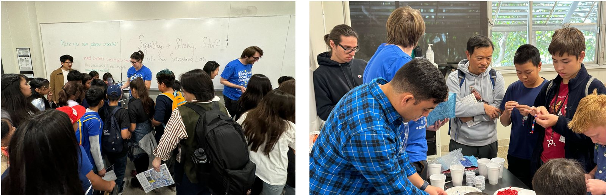
November 3, 2024
Exploring Your Universe
The lab hosted an interactive science booth for the third year in a row at UCLA’s largest annual STEM event, sharing the group’s expertise on polymers, complex fluids, and foams.
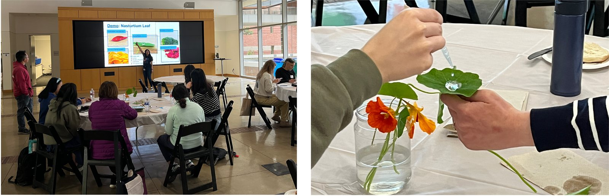
May 4, 2024
CNSI Teacher Training — Nanoscale Control of Wetting
Members of the lab volunteered with CNSI to train roughly a dozen California high school science teachers to run classroom experiments demonstrating nanoscale control of wetting.
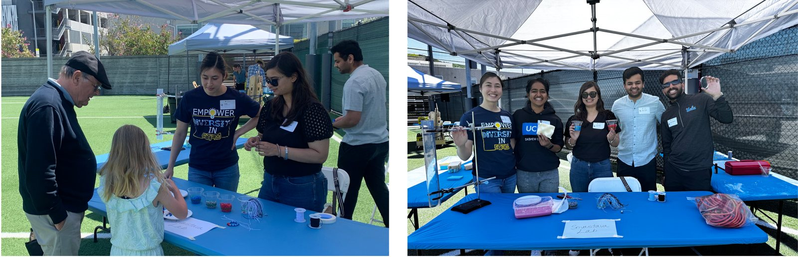
April 28, 2024
Willows Sunday Funday
Members of the lab hosted a booth at the Willows Community School’s Sunday Funday. More than 100 students took part in experiments and demonstrations on polymers and complex fluids.
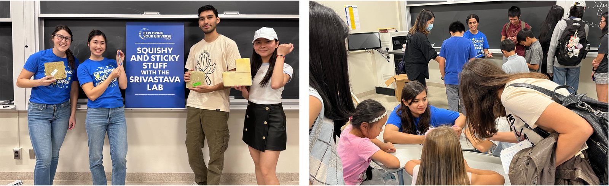
November 6, 2023
Exploring Your Universe
The lab hosted an interactive science booth for the second year in a row at UCLA’s largest annual STEM event, sharing the group’s expertise on polymers, complex fluids, and foams with the community.
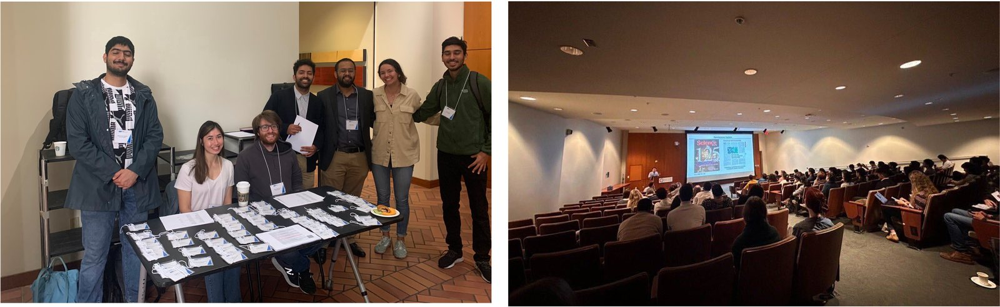
June 2, 2023
SoCal Polymers & Soft Matter Symposium
The Srivastava Lab organized the inaugural SoCal Polymers & Soft Matter Symposium at UCLA. The symposium drew over 100 scientists and included 25 technical presentations from graduate students and postdocs, in sessions chaired by faculty from across Southern California.
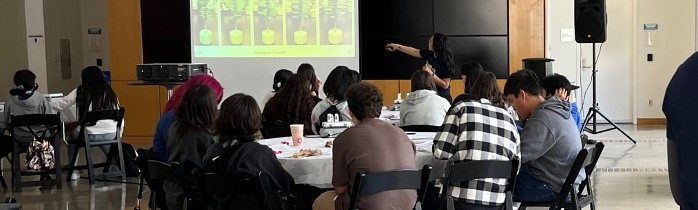
May 4, 2023
CNSI Outreach — Empower Diversity in STEM Day
Members of the group took part in a field trip co-organized by CNSI that brought around 60 high school students from underrepresented backgrounds to UCLA. The students learned about liquid crystals and made their own liquid crystal mood boards.
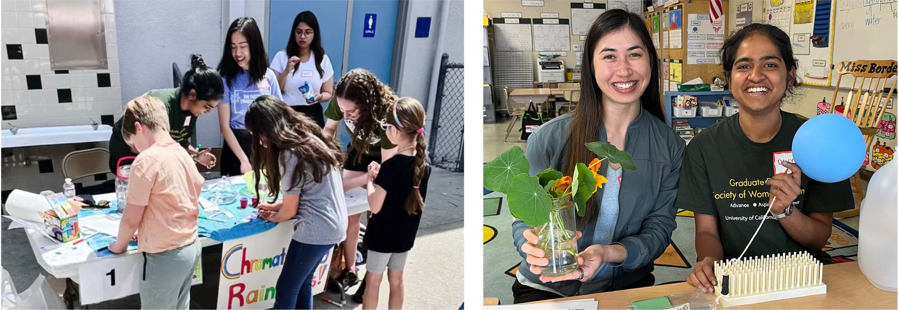
April 30, 2023
Science Slam, with GradSWE and CNSI
Members of the lab joined UCLA GradSWE and CNSI to host labs and science demonstrations at Westwood Charter Elementary School. In the ‘Grow Your Rainbow’ demo, students learned about capillary action by watching colors rise through a wet paper towel.
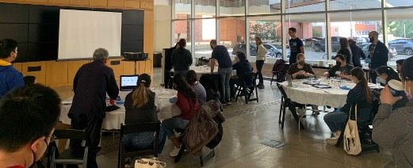
February 4, 2023
CNSI Water Filtration Teacher Training Workshop
Members of the lab worked with CNSI to showcase simple water purification experiments for middle school and high school teachers.
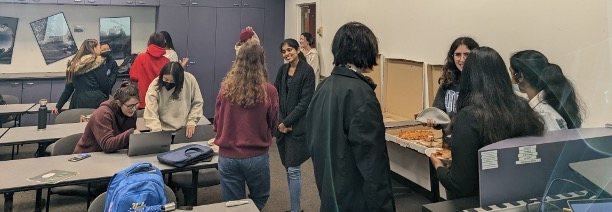
November 8, 2022
GradSWE Mentorship Event
Members of the group took part in a GradSWE mentorship event, giving undergraduate students feedback on their cover letters, resumes, and CVs.
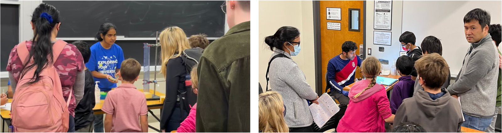
November 6, 2022
Exploring Your Universe
The lab hosted an interactive science booth at UCLA’s largest annual STEM event, sharing the group’s expertise on polymers, complex fluids, and foams with the community.
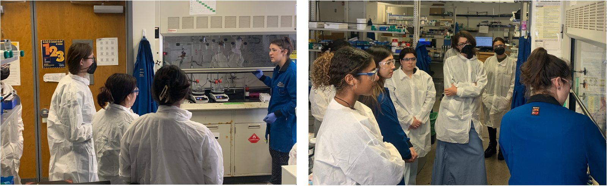
November 2, 2022
PEERS Lab Tour
The group organized a lab tour for first-year PEERS students. PEERS is a two-year program for science majors who have overcome more than the typical hurdles on the way to UCLA.